The goal of r2dii.plot is to help you plot 2DII data in an informative, beautiful, and easy way. It is designed to work smoothly with other “r2dii” packages – r2dii.data, r2dii.match, and r2dii.analysis. It also plays well with the ggplot2 package, which helps you customize your plots.
library(ggplot2)
library(dplyr, warn.conflicts = FALSE)
library(r2dii.data)
library(r2dii.match)
library(r2dii.plot)
library(r2dii.analysis)Your data should have a structure similar to that of the demo datasets in the r2dii.data package.
loanbook <- loanbook_demo
ald <- ald_demo
scenario <- co2_intensity_scenario_demo
region <- region_isos_demoYour workflow involves functions from the packages r2dii.match and r2dii.analysis.
matched <- loanbook %>%
match_name(ald) %>%
prioritize() # Remember to validate matches (see `?prioritize`)r2dii.plot supports three kinds of plots – emission intensity, techmix, and trajectory. Each plot can be created using two types of functions: qplot_*() for standardized plots and plot_*() for ‘bare’ plots leaving the customization to the user.
For each kind, you’ll need to subset the specific rows you want to plot (for example with subset() or dplyr:filter()). For details see the documented “Requirements” of the argument data of each plot_*() or qplot_*() function (e.g. see ?plot_emission_intensity). If you forget to meet the data requirements the error message should guide you.
‘Quick’ plots
Quick plots allow you to create a good looking plot without extensive knowledge of other R packages. They are perfect to have a quick look into the data and for users who are interested in standard PACTA visualizations. Their common characteristics are:
- 5 year time span.
- Formatted data labels.
- Formatted axis labels.
- A title (and a subtitle).
Use qplot_emission_intensity() with sda-like data.
data <- matched %>%
target_sda(ald, co2_intensity_scenario = scenario) %>%
filter(sector == "cement")
#> Warning: Removing ald rows where `emission_factor` is NA
qplot_emission_intensity(data)
#> Removing data before 2020 -- the start year of 'projected'.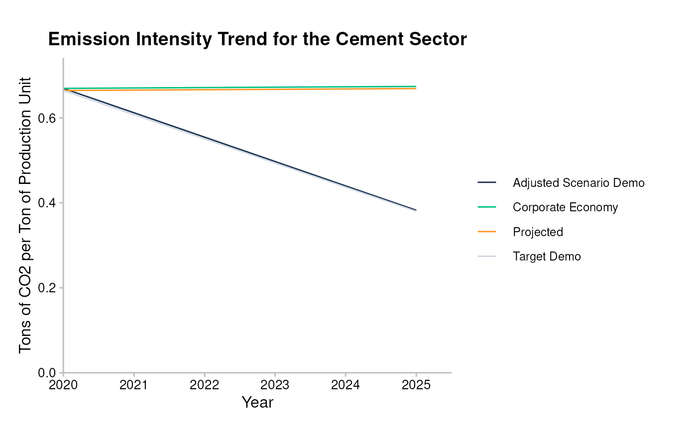
Use qplot_trajectory() with market_share-like data.
data <- matched %>%
target_market_share(ald, scenario = scenario_demo_2020, region_isos = region) %>%
filter(technology == "renewablescap", region == "global")
qplot_trajectory(data)
#> Removing data before 2020 -- the start year of 'projected'.
#> Normalizing `production` values to 2020 -- the start year.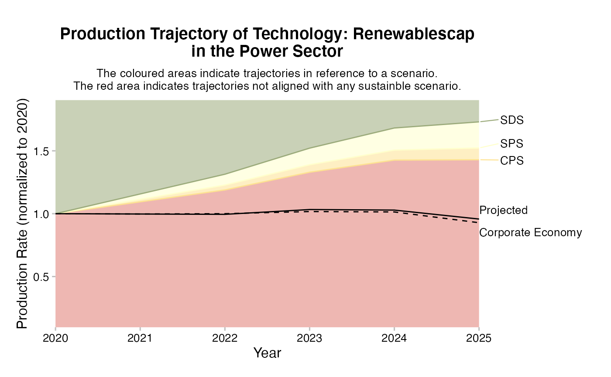
Use qplot_techmix() with market_share-like data.
data <- matched %>%
target_market_share(ald, scenario = scenario_demo_2020, region_isos = region) %>%
filter(
sector == "power",
region == "global",
metric %in% c("projected", "corporate_economy", "target_sds")
)
qplot_techmix(data)
#> Removing data before 2020 -- the start year of 'projected'.
#> The `technology_share` values are plotted for extreme years.
#> Do you want to plot different years? E.g. filter data with:`subset(data, year %in% c(2020, 2030))`.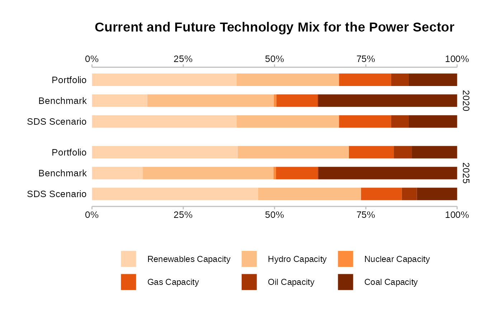
Plots
Plots created with plot_*() functions show the data as they are. To customize these plots you can use three strategies: 1) Use parameters of plot_*(), 2) use ggplot2 functions, and 3) Modify the input data. This section shows the three strategies applied to different functions of the plot_*() family.
The basic output of plot_emission_intensity() looks rather unappealing.
data <- matched %>%
target_sda(ald, co2_intensity_scenario = scenario) %>%
filter(sector == "cement")
#> Warning: Removing ald rows where `emission_factor` is NA
plot_emission_intensity(data)
#> Removing data before 2020 -- the start year of 'projected'.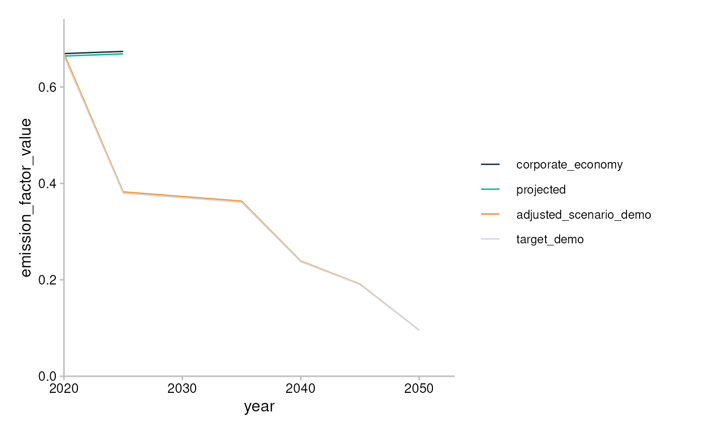
You can use parameters of plot_emission_intensity() to replicate features of qplot_emission_intensity(), and add plot labels with ggplot2::labs().
data <- matched %>%
target_sda(ald, co2_intensity_scenario = scenario) %>%
filter(sector == "cement")
#> Warning: Removing ald rows where `emission_factor` is NA
plot_emission_intensity(data, convert_label = to_title, span_5yr = TRUE) +
labs(
title = "Emission Intensity Trend for the Cement Sector",
x = "Year",
y = "Tons of CO2 per Ton of Production Unit"
)
#> Removing data before 2020 -- the start year of 'projected'.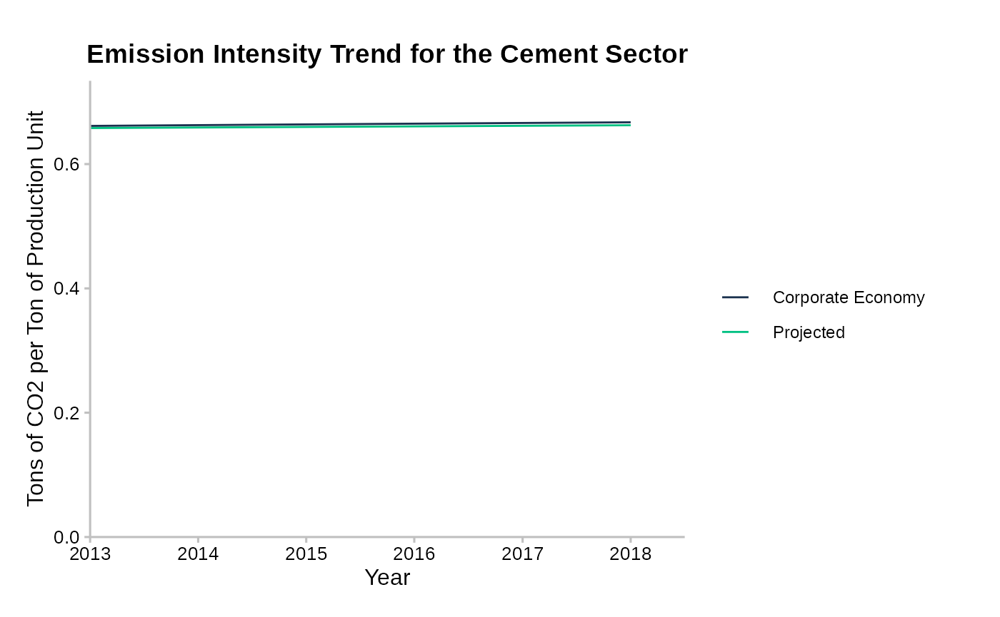
You can polish your plot by modifying the input data and output “ggplot” object. Your options are limitless but these are some typical things you may do:
- Change the time span.
- Add custom labels by modifying the column ‘metric’ and technology of
market_share-like data. - Add a title and a subtitle.
- Change x and y axis labels.
- Customize the colours and legend labels with
ggplot2::scale_colour_manual()orr2dii.plot::scale_*()functions (see Styling functions).
For example, here is how you might customize each of the three kinds of plots:
data <- sda %>%
filter(
sector == "cement",
year <= 2030
)
plot_emission_intensity(data) +
labs(
title = "Emission intensity plot for cement",
x = "Time",
y = "Tons of CO2 per ton of cement produced"
) +
scale_color_manual(
values = c("#4a5e54", "#a63d57", "#78c4d6", "#f2e06e"),
labels = c("Proj.", "Corp. Economy", "Target (demo)", "Adj. Scenario (demo)")
)
#> Removing data before 2020 -- the start year of 'projected'.
#> Scale for 'colour' is already present. Adding another scale for 'colour',
#> which will replace the existing scale.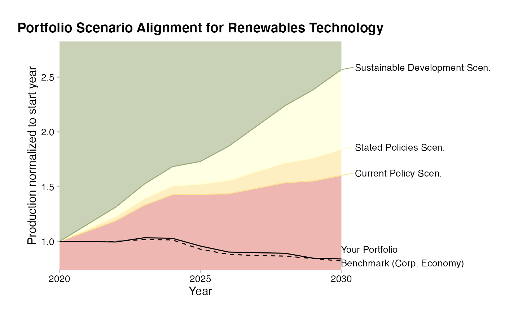
data <- matched %>%
target_market_share(ald, scenario = scenario_demo_2020, region_isos = region) %>%
filter(
technology == "renewablescap",
region == "global",
year <= 2030
) %>%
mutate(
label = case_when(
metric == "projected" ~ "Your Portfolio",
metric == "corporate_economy" ~ "Benchmark (Corp. Economy)",
metric == "target_sds" ~ "Sustainable Development Scen.",
metric == "target_sps" ~ "Stated Policies Scen.",
metric == "target_cps" ~ "Current Policy Scen.",
TRUE ~ metric
)
)
plot_trajectory(data) +
scale_x_continuous(n.breaks = 3) +
labs(
title = "Portfolio Scenario Alignment for Renewables Technology",
x = "Year",
y = "Production normalized to start year"
) +
theme(plot.margin = unit(c(0.5, 6, 0.5, 1), "cm"))
#> Removing data before 2020 -- the start year of 'projected'.
#> Normalizing `production` values to 2020 -- the start year.
#> Scale for 'x' is already present. Adding another scale for 'x', which will
#> replace the existing scale.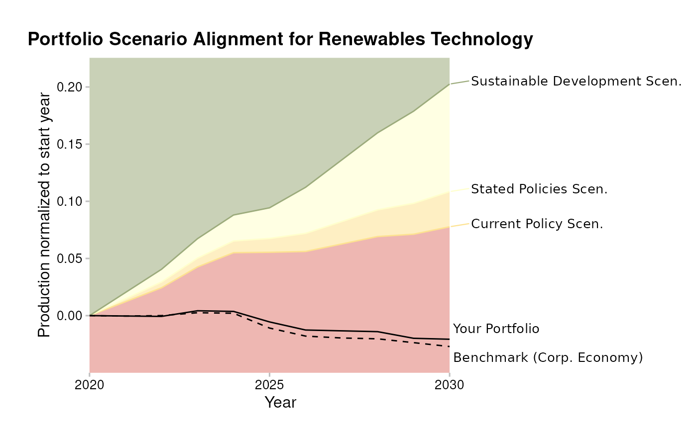
data <- market_share %>%
filter(
metric %in% c("projected", "corporate_economy", "target_sds"),
sector == "power",
region == "global",
year >= 2021,
year <= 2040 # custom time range
) %>%
mutate(
label = case_when(
metric == "projected" ~ "Your Portfolio",
metric == "corporate_economy" ~ "Corporate Economy Benchmark",
metric == "target_sds" ~ "SDS Scenario"
)
)
plot_techmix(data) +
scale_fill_manual(
values = c("black", "brown", "grey", "blue", "green4"),
labels = paste(c("Coal", "Oil", "Gas", "Hydro", "Renewables"), "Cap.")
)
#> The `technology_share` values are plotted for extreme years.
#> Do you want to plot different years? E.g. filter data with:`subset(data, year %in% c(2020, 2030))`.
#> Scale for 'fill' is already present. Adding another scale for 'fill', which
#> will replace the existing scale.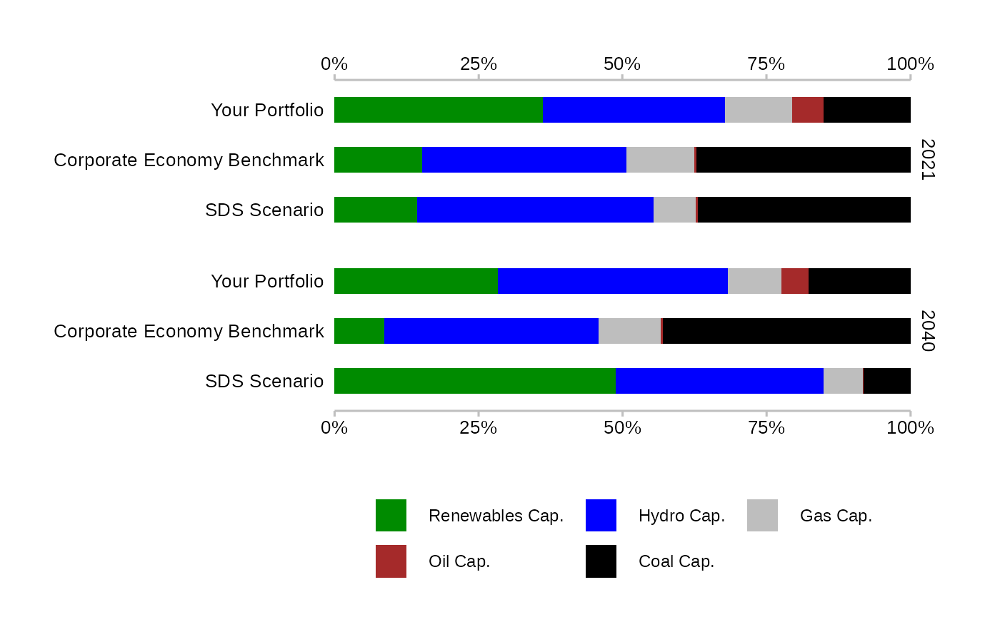
Styling functions
A number of functions allow you to customize your plots using the 2DII style:
- Use
theme_2dii()to display non-data content.
data <- market_share %>%
filter(
metric == "projected",
sector == "power",
region == "global",
year %in% c(2020, 2025)
)
ggplot(data, aes(x = factor(year), y = production)) +
geom_col() +
facet_wrap(~technology) +
theme_2dii()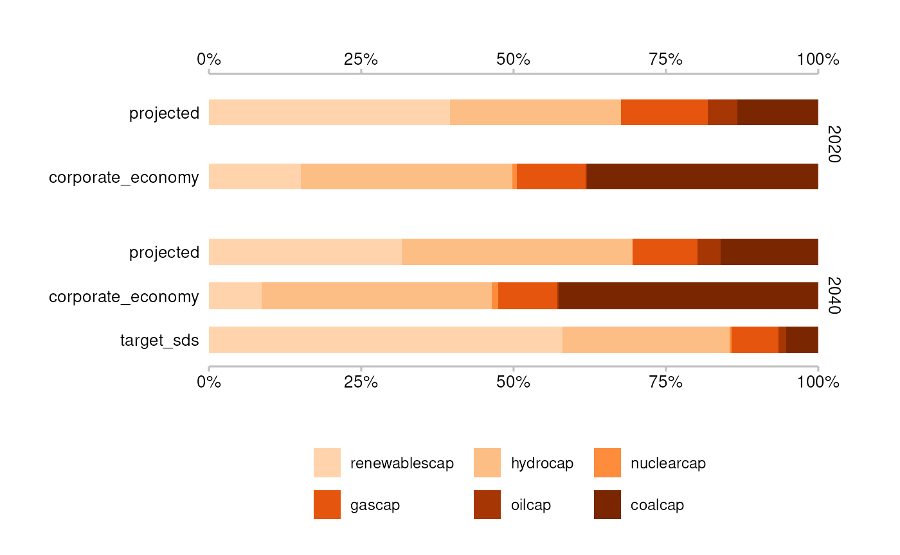
- Use
scale_colour_r2dii()andscale_fill_r2dii()to apply the 2DII colour palette.
data <- market_share %>%
filter(
metric != "corporate_economy",
sector == "power",
region == "global",
technology == "renewablescap"
)
ggplot(data, aes(x = year, y = production, color = metric)) +
geom_line() +
scale_colour_r2dii(labels = c("dark_blue", "green", "orange", "ruby_red")) +
theme_2dii()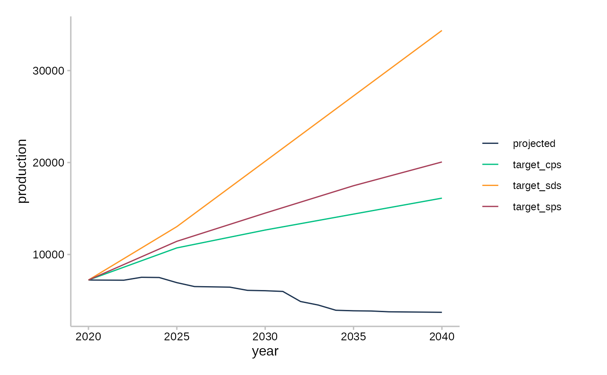
- Use
scale_colour_r2dii_sector()andscale_fill_r2dii_sector()to apply the 2DII colour palette for sectors.
data <- market_share %>%
filter(
metric == "projected",
region == "global",
year %in% c(2020, 2025)
) %>%
group_by(sector, year) %>%
summarise(production = sum(production))
#> `summarise()` has grouped output by 'sector'. You can override using the
#> `.groups` argument.
ggplot(data, aes(x = factor(year), y = production, fill = sector)) +
geom_col() +
scale_fill_r2dii_sector(sectors = c("automotive", "oil&gas", "power")) +
theme_2dii() +
facet_wrap(~sector)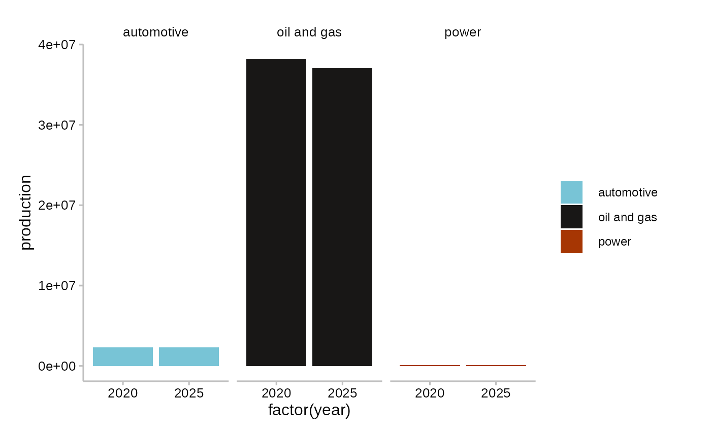
- Use
scale_colour_r2dii_fill()andscale_fill_r2dii_fill()to apply the 2DII colour palette for technologies.
technologies <- c("coalcap", "oilcap", "gascap", "hydrocap", "renewablescap")
data <- market_share %>%
filter(
metric == "projected",
sector == "power",
region == "global",
year %in% c(2020, 2025)
) %>%
mutate(technology = factor(technology, levels = technologies)) %>%
arrange(technology)
ggplot(data, aes(x = factor(year), y = production, fill = technology)) +
geom_col() +
scale_fill_r2dii_tech("power", technologies) +
facet_wrap(~technology) +
theme_2dii()